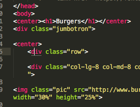

Shower Presentation Engine
Yours Truly, Famous Inc.
Frontend
Максим Павлов

О себе
- закончил технопарк
- 2 года во фронтенде почте@mail.ru
- пол-года - менеджер
- сейчас - опять фронтендер
Блоки vs. строки vs. инлайн-блоки 1/2
Блоки
- div
- form
- h1,...,h6
- hr
- p
- table
Блоки vs. строки vs. инлайн-блоки 1/2
Строки
- img
- span
- a
Блоки vs. строки vs. инлайн-блоки 2/2
- расположение друг за другом
- ширина и высота применяется только для блочных или инлайн-блоков
Поток форматирования
Свойства, вырывающие из потока форматирования
- float
- postition: absolute, fixed
- https://habrahabr.ru/post/136622/
- http://habrahabr.ru/post/136588/
Чьи стили побеждают vol.1
<link rel="stylesheet" type="text/css" href="styles.css">
<style type="text/css">
.my-class {
color: green;
}
</style>
<div style="color: black"></div>
Чьи стили побеждают vol.1
- !important
.my-class {
color: red !important
}
Чьи стили побеждают: серебряная пуля
<link rel="stylesheet" type="text/css" href="styles.css">
Чьи стили побеждают vol.2
* {} /* a=0 b=0 c=0 -> специфичность = 0 */
li {} /* a=0 b=0 c=1 -> специфичность = 1 */
li:first-line {} /* a=0 b=0 c=2 -> специфичность = 2 */
ul li {} /* a=0 b=0 c=2 -> специфичность = 2 */
ul ol+li {} /* a=0 b=0 c=3 -> специфичность = 3 */
ul li.red {} /* a=0 b=1 c=2 -> специфичность = 12 */
li.red.level {} /* a=0 b=2 c=1 -> специфичность = 21 */
#t34 {} /* a=1 b=0 c=0 -> специфичность = 100 */
#content #wrap {} /* a=2 b=0 c=0 -> специфичность = 200 */
Чьи стили побеждают vol.2: БЭМ
- переиспользуемость
- никакой специфичности
- понятность кода
БЭМ
- Блок (search-block)
- Элемент (search-block__input, search-block__button)
- Модификатор (search-block__button_big, search-block__button_floating)
Ошибки
<link href='https://fonts.googleapis.com/...' rel='stylesheet' type='text/css'>
<img src="http://www.burgerclub.ru/..." width="30%">
</div class="row">
</div class="row">

Таблички vs. блоки
- Таблицы используем для таблиц
- Блоки используем для всего, что не таблица
- Современно
- перенести какой-то блок - легко
Bootstrap
- строки
- колонки
- http://bootstrap-3.ru/index.php
Консоль разработчика
- вкладки
- элементы - редактирование css
- сеть - что не загрузилось
- chrome map to file system resource
Формы
- что необходимо для отправки форму: action, method, name